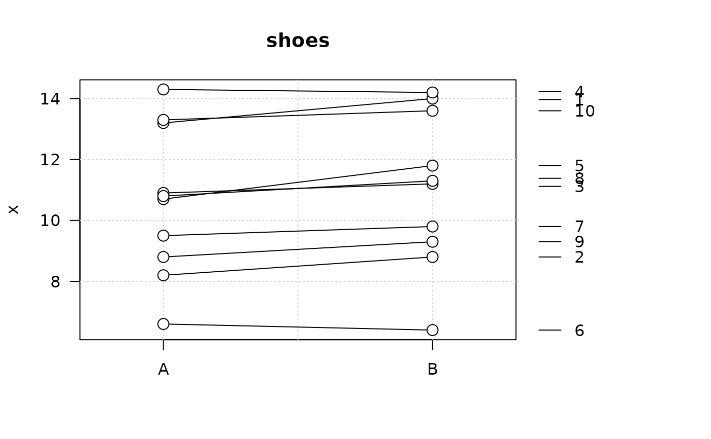
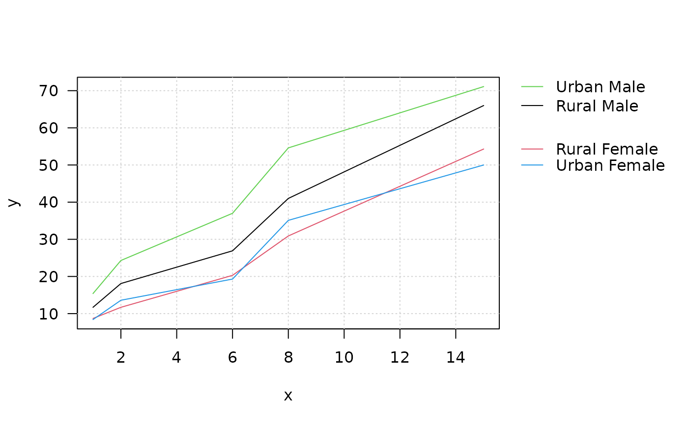

PlotLinesA.RdPlot the columns of one matrix against the columns of another. Adds a legend on the right at the endpoints of lines.
vectors or matrices of data for plotting. The number of rows should match. If one of them are missing, the other is taken as y and an x vector of 1:n is used. Missing values (NAs) are allowed.
vector of colors. Colors are used cyclically.
vector of line types, widths, and end styles. The first element is for the first column, the second element for the second column, etc., even if lines are not plotted for all columns. Line types will be used cyclically until all plots are drawn.
titles for x and y axes, as in plot.
ranges of x and y axes, as in plot.
a character which specifies the x axis type. Specifying "n" suppresses plotting of the axis. The standard value is "s", any value other than "n" implies plotting.
character expansion factor relative to current par("cex").
list of additional arguments for the legend; names of the list are used as argument names. If set to NA, the legend will be suppressed. See details.
an overall title for the plot.
logical adds an nx by ny rectangular grid to an existing plot.
the margins of the plot.
character string or vector of 1-characters or integers for plotting characters, see points. The first character is the plotting-character for the first plot, the second for the second, etc. The default is the digits (1 through 9, 0) then the lowercase and uppercase letters. If no points should be drawn set this argument to NA (this is the default).
vector of colors for the points. Colors are used cyclically. Ignored if pch = NA.
vector of background (fill) colors for the open plot symbols given by pch = 21:25 as in points. The default is set to par("bg"). Ignored if pch = NA.
vector of character expansion sizes, used cyclically. This works as a multiple of par("cex"). Default is 1.0. Ignored if pch = NA.
the dots are sent to matplot
.
This function is rather a template, than a function. It wraps matplot to generate a lines plot and adds a rather sophisticated legend on the right side, while calculating appropriate margins. A grid option is included (as panel.first does not work in matplot).
As in matplot, the first column of x is plotted against the first column of y, the second column of x against the second column of y, etc. If one matrix has fewer columns, plotting will cycle back through the columns again. (In particular, either x or y may be a vector, against which all columns of the other argument will be plotted.)
The legend can be controlled by following arguments:
list(line = c(1, 1), width = 1, y = SpreadOut(unlist(last),
mindist = 1.2 * strheight("M") * par("cex")),
labels = names(last), cex = par("cex"), col = col[ord],
lwd = lwd[ord], lty = lty[ord])All arguments are recycled.
m <- matrix(c(3,4,5,1,5,4,2,6,2), nrow = 3,
dimnames = list(dose = c("A","B","C"),
age = c("2010","2011","2012")))
PlotLinesA(m, col=c(Pal("Helsana")), main="Dose ~ age_grp", lwd=3, ylim=c(1, 10))
# example from MASS
shoes <- list(
A = c(13.2, 8.2, 10.9, 14.3, 10.7, 6.6, 9.5, 10.8, 8.8, 13.3),
B = c(14, 8.8, 11.2, 14.2, 11.8, 6.4, 9.8, 11.3, 9.3, 13.6))
PlotLinesA(do.call(rbind, shoes), xlim=c(0.75,2.25), col=1, main="shoes",
pch=21, pch.bg="white", pch.col=1, pch.cex=1.5)

# let's define some arbitrary x-coordinates
PlotLinesA(x=c(1,2,6,8,15), y=VADeaths)
